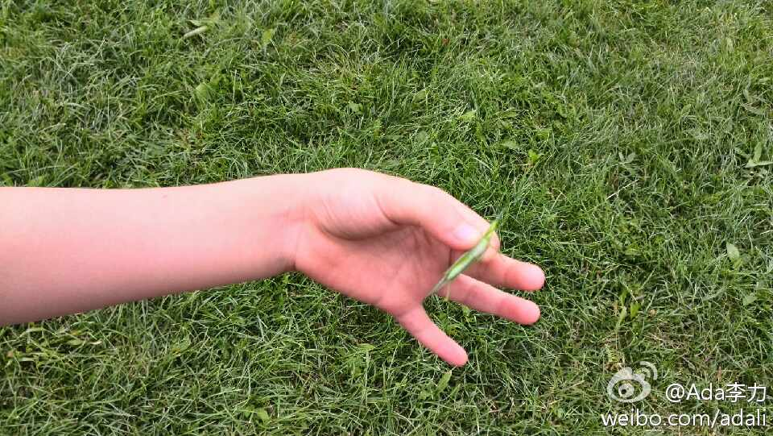

@陶建辉快乐妈咪 组织的这个群一周两次快走，10公里可以79分钟完成，强度和时间够啦。//@Gator:参加。不过，这种活动的健身效果可以忽略不计(每周少于两次，每次少于45分钟，心率也不够120，则锻炼效果可以忽略)，其实是一种社交啦。@Ada李力:奥林匹克森林公园里健身的人真多。塑胶跑道上的人川流不息。今天参合一个十公里快走的组织，第一次带着姣姣只能走五公里。这类健身群最近有很多。可以考虑定期组织@CTO俱乐部 健身活动。 